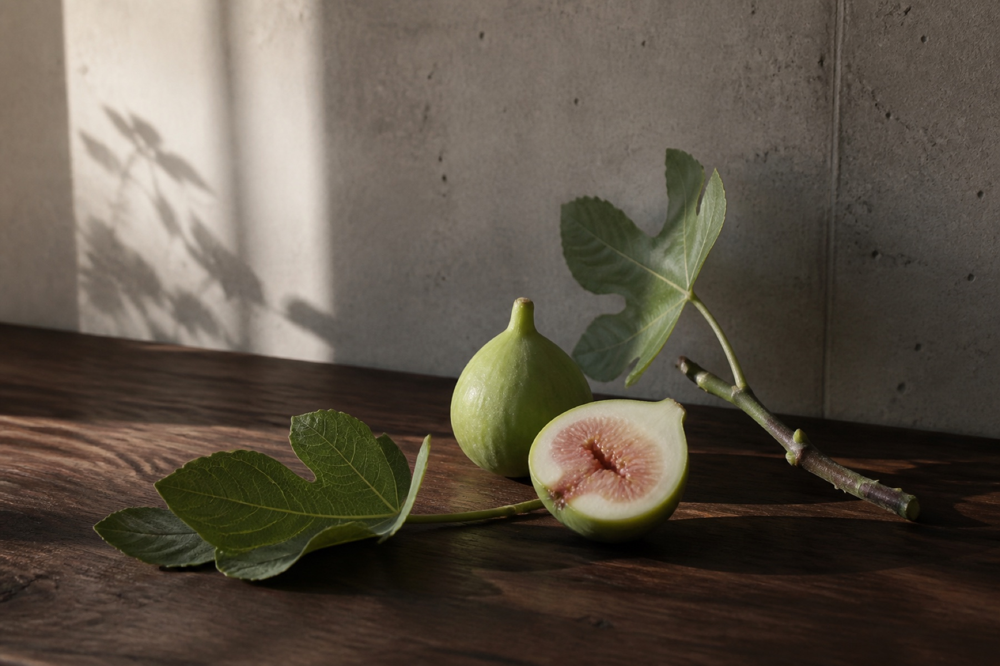
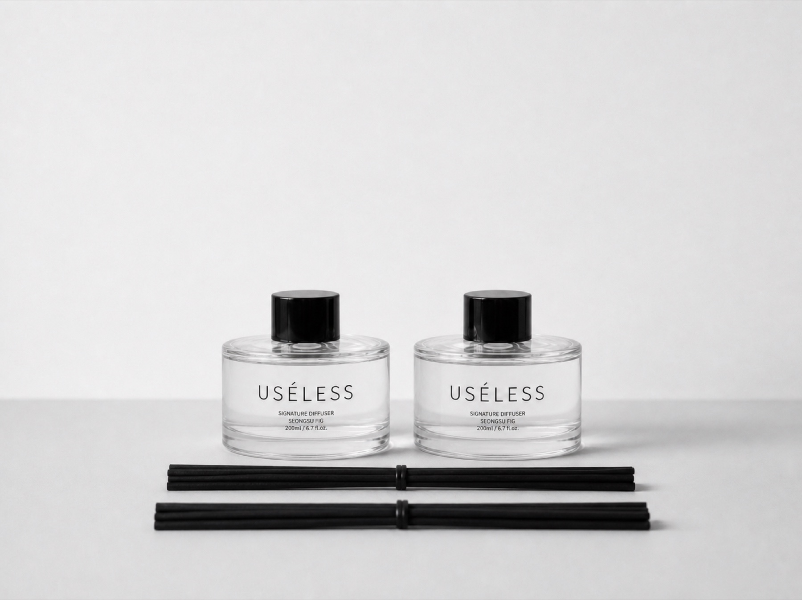
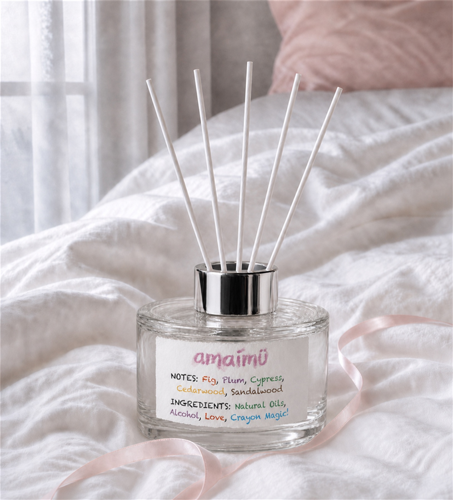

여행을 기억할 때
사진 속에만 남겨두기 아쉬운 서울의 오후를, 집에서도 떠올리고 싶을 때.
 Concept visual · Specifications pending
Concept visual · Specifications pending
Things don't have to be useful to matter.
여행에서 만난 서울을 집에서도 기억하고 싶을 때. 좋아하는 장면을 누군가에게 선물하고 싶을 때. USÉLESS는 그 마음을 향과 오브제로 담습니다.
서울을 곁에 두는 방법A memory to keep
여행의 기분을 집으로 가져오고, 함께 걷던 사람에게 그날의 이야기를 건넵니다. 좋아하는 공간을 내 취향으로 가꾸는 향. 그 첫 장면은 성수입니다.
사진 속에만 남겨두기 아쉬운 서울의 오후를, 집에서도 떠올리고 싶을 때.
함께 걸었던 골목이나 상대가 좋아할 장면을 골라, 이야기와 함께 건네고 싶을 때.
집의 선반이나 카페의 한편에, 향과 단정한 유리 오브제로 분위기를 더하고 싶을 때.

Scene 001 / Seongsu
초록 무화과의 생기, 마른 나무의 결, 콘크리트의 차가운 인상. 성수라는 장소를 복제하기보다 그곳에서 기억할 만한 순간을 고릅니다.
Object language
검은 캡과 리드, 투명한 유리, 서울의 장면을 적은 이름. 나무 선반이나 테이블 위에 놓았을 때 주변의 물건과 어울리는 모습을 생각했습니다.

SEOUL, BOTTLED. / Seoul scent archive
향보다 먼저 장면을 고릅니다. 한 동네의 특정 시간과 공기, 행동과 물건을 기록하고, 여행이 끝난 뒤에도 방에 남을 향으로 번역합니다.
WHY IT MATTERS푸른 무화과 잎 사이로 스미는 성수의 늦은 햇빛.
Green Fig · Fig Leaf · CedarWHY IT MATTERS아이리스와 머스크가 포근히 감싸는 호텔의 흰 침구.
Cashmere Wood · Iris · White MuskWHY IT MATTERS유자빛 햇살과 편백의 서늘한 숨이 여는 숲의 아침.
Yuzu · Cypress · HinokiWHY IT MATTERS벚꽃과 작약이 나무결 위에 내려앉은 석촌의 봄.
Cherry · Peony · CedarWHY IT MATTERS화이트 티와 작약이 잔잔히 피어나는 오후의 찻잔.
White Tea · Peony · Soft MuskStill unbottled
Next-scene candidates · Not a confirmed launch lineup
Scent & Object
성수의 늦은 오후를 떠올리는 무화과와 우드의 향. 서울을 기억하는 기념품으로, 취향을 나누는 선물로 만나보세요.

The first answer / amaimü
유슬레스서울이 처음 만든 독립 브랜드 amaimü. 책상에 놓고 매일 바라보는 즐거움, 친구에게도 선물하고 싶은 마음을 담습니다.
Enter amaimü